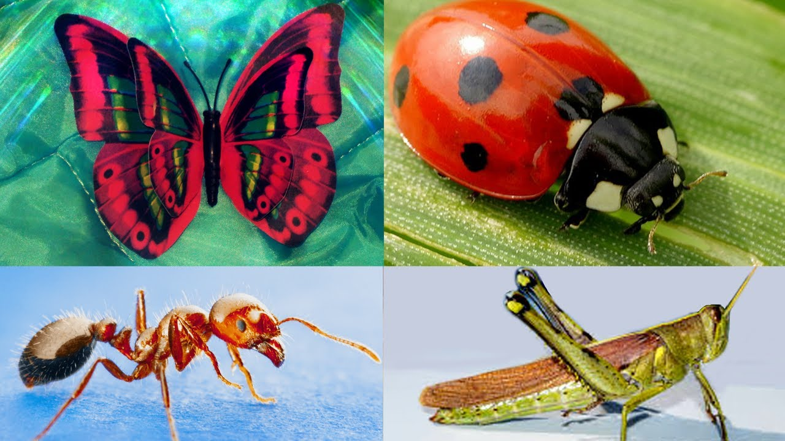
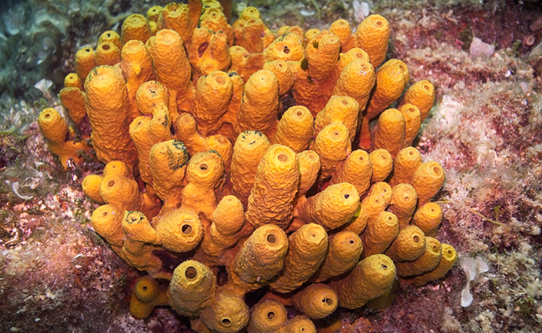
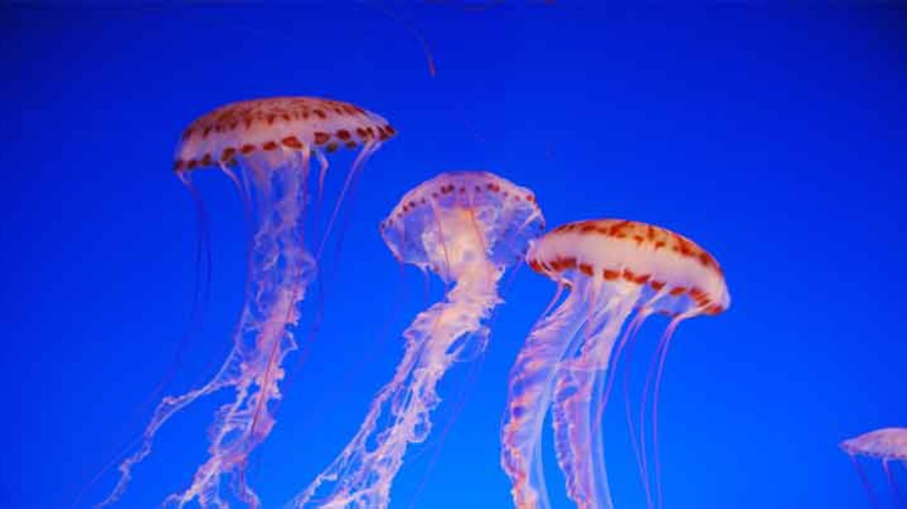
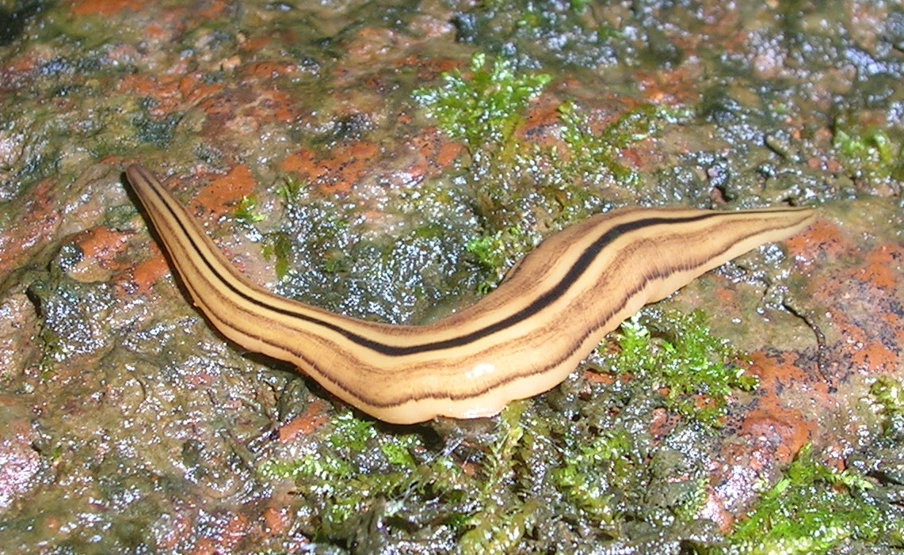
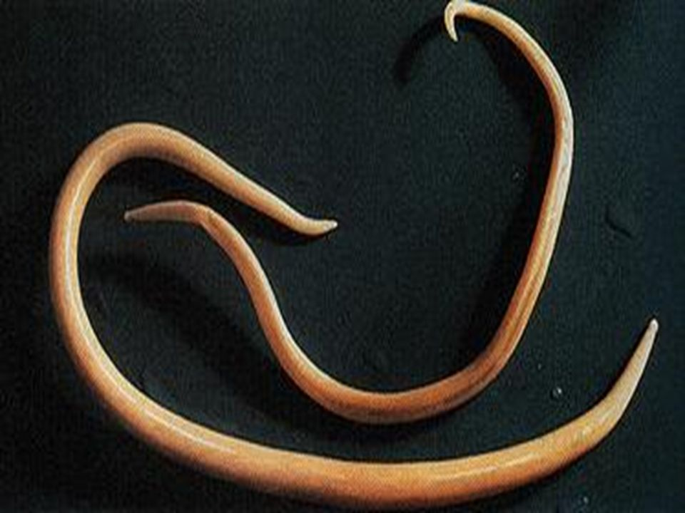
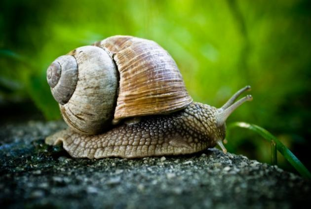

Invertebrados

Invertebrados são os animais que não possuem coluna vertebral, e nesse site iremos estudar a suas mudanças do começo até hoje.
Poríferos
Também chamados de Esponjas ou Espongiários, possuem poros e são aquáticos e não se locomovem.

Cnidários
São organimos pluricelulares, são aquáticos. São representados pelas águas-vivas, os corais etc.

Platelmintos
São conhecidos como vermes, nem todos possuem sistema digestório, são triblásticos, acelomados e com simetria bilateral.

Nematelmintos
Possuem Sistema digestório completo, contrário dos platelmintos, possuem boca e ânus, e tem sexos separados.

Moluscos
São animais de corpo mole, geralmente possuem uma concha para se protegerem, mas é ausente em outros como o polvo ou interna como na lula.

Bibliografia
-
Toda Matéria
-
Toda Matéria
-
Brasil Escola
-
Só Biologia
-
Toda Matéria